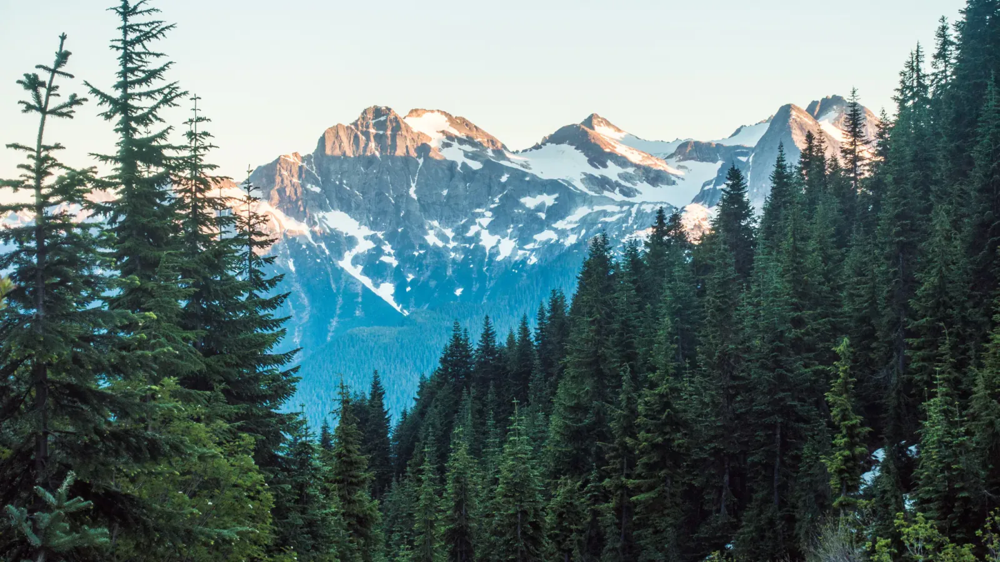

American Alps
The sun was sitting right on the horizon as we came in, and I spent the whole descent with my face against the window. A river braided its way toward the sea beside the engine. Then came the inlets of Puget Sound, glowing silver under a long, dim line of mountains. The Olympics, I think. I had four days and two cameras, and the North Cascades were still a drive away.
The next day I followed the Skagit River upstream on Highway 20, the North Cascades Highway. A golden meadow rolled out beneath a snow-streaked peak, and then the river itself came into view. I didn't believe the color until I saw it, a milky mint green that looked more tropical than Washington! A raptor skimmed low over the water. Later, in the shade of tall conifers, the sun could only squeeze through as a single bright star. Plan on summer: that highway is the only road across these mountains, and it closes every winter.

Around nine that evening, the last light hit the snow on the high peaks and turned it pink and orange. I watched it fade, then stayed up for the dark. Far from any city lights, the Milky Way arched over the firs, so thick with stars the sky looked crowded, and low on the left sat a steady orange dot. That was Mars, closing in on its nearest approach to Earth in fifteen years. The bright glow low in that band is the center of our own galaxy.
The long day came next. The trail climbed out of the forest, and the views only got bigger. Far below, Diablo Lake lay in its valley like a turquoise fjord. The color comes from rock flour: glaciers grind rock into a fine powder, the meltwater carries it downstream, and the suspended flour scatters the light into an unreal blue-green. The park holds more than 300 glaciers, and the ice carved this skyline as surely as it colored the water. Jagged peaks stacked up behind each other, fading from dark blue to pale blue in the haze. People call these mountains the American Alps, and now I get it. In the other direction, a much deeper blue lay a long way down, which I think was Ross Lake. Near the top, mid-July still meant snowfields and little ponds of meltwater ringed by subalpine firs.
I spent my last morning with the dams. I pulled over for each dam I passed. Seattle City Light built three of them on the Skagit (Gorge, Diablo and Ross), and the corridor off Highway 20 is lined with powerhouses wedged into steep country. I peered down a gorge at one, a long cleared strip running up the slope behind it. Another had ROSS across its front with a huge dam looming above. At a steel suspension footbridge, a little local held court in the middle of the planks like a self-appointed toll collector. Hydropower like this is a big reason Seattle's electricity is so clean.